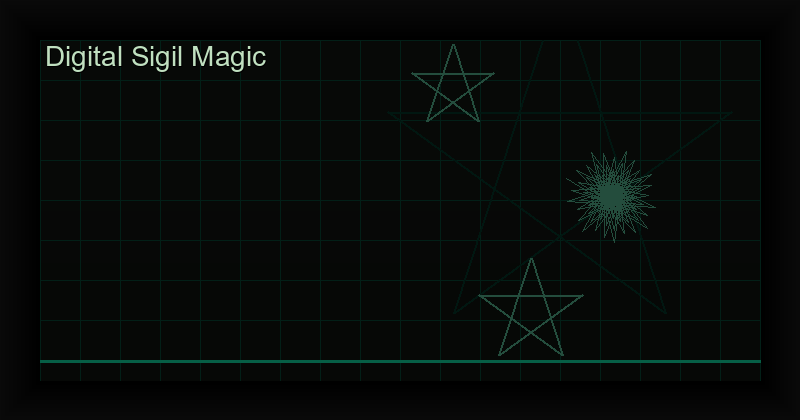

Digital Sigil Magic Guide: Code, Cryptography & Chaos Magick
What Is a Sigil?
A sigil is a symbolic representation of a specific intention or desire, condensed into a visual form and then charged with magical will. The concept was systematized by the English occultist Austin Osman Spare (1886-1956), who developed the technique of writing a statement of intent, removing repeated letters, and combining the remaining letters into a unique abstract design.
Chaos magic adopted Spare's method as a core technique. The process is simple: encode your will into a symbol, raise energy (gnosis), and release the sigil into the subconscious to manifest. Traditionally, this was done with pen and paper — but in the 21st century, digital sigil generation has opened new frontiers.
Traditional vs. Digital Sigil Creation
In traditional sigil work, the practitioner:
- Writes a statement of intent (e.g., "I will find a better job")
- Removes vowels and repeated letters
- Combines remaining consonants into a unique symbol
- Charges the sigil through gnosis (meditation, sex, exhaustion, etc.)
- Forgets or releases the sigil to work in the subconscious
Digital sigil generation automates steps 1-3 with cryptographic precision, freeing the practitioner to focus entirely on steps 4-5 — the magical core of the operation. The key innovation is that cryptographic entropy derives true randomness from your own written intention, creating a sigil that is mathematically unique and irreproducible.
Ancient Alphabets in Digital Sigils
One of the most powerful features of modern sigil generators is the ability to encode your intention using ancient occult alphabets. Each alphabet carries its own vibrational signature and historical charge:
- Runic (Elder Futhark): The runes of the Norse tradition, each symbol a gateway to ancient Germanic wisdom.
- Egyptian Hieroglyphs: The sacred writing of the pharaohs, laden with thousands of years of temple magic.
- Hebrew: The letters of the Kabbalah, each character a vessel of divine emanation.
- Arabic: The calligraphic script of Sufi mysticism and alchemical transformation.
- Greek: The alphabet of the Neoplatonic philosophers and Hermetic tradition.
- Cyrillic: The script of Slavic esoteric traditions and Eastern Orthodox mysticism.
By encoding your intention in one of these alphabets, you layer additional symbolic meaning onto the sigil, aligning your will with the current of that tradition.
Planetary Kameas (Magic Squares)
Beyond alphabets, planetary kameas — also called magic squares — are grids of numbers associated with the seven classical planets. Each square has unique mathematical properties and astrological correspondences:
- Saturn (3x3): Protection, binding, structure
- Jupiter (4x4): Expansion, wealth, success
- Mars (5x5): Energy, conflict, courage
- Sun (6x6): Vitality, authority, illumination
- Venus (7x7): Love, beauty, harmony
- Mercury (8x8): Communication, intellect, commerce
- Moon (9x9): Intuition, emotion, dreams
Integrating a planetary kamea into your sigil aligns your intention with the corresponding cosmic force, adding astrological precision to your working.
The Gnostic Moment: Why the Flash Ritual Matters
In traditional chaos magick, the sigil is charged in a moment of gnosis — an altered state of consciousness where the critical faculty is temporarily suspended. This is the most important step. Without it, the sigil is just a drawing.
Modern digital sigil apps incorporate a visual flash ritual: after generating the sigil, a brief, intense visual burst (often a flash of light or rapid animation) serves as a gnostic trigger. The practitioner stares at the sigil, the flash occurs, and the sigil is simultaneously fired into the subconscious. This elegantly solves the problem of achieving gnosis in everyday environments.
Generate your own cryptographic sigils.
The Magick Chaos Sigil Generator combines 6 ancient alphabets, planetary kameas, and cryptographic entropy in one premium offline app.
Get the Chaos Sigil Generator ?Try It Free Online
Before purchasing, you can try the Goetic sigil generator online for free. Experiment with different alphabets and see the power of cryptographic sigilization firsthand.
Try the Free Online Sigil Generator ?
Frequently Asked Questions
Are digital sigils as effective as hand-drawn ones?
Effectiveness depends on the practitioner's focus and gnostic state, not the drawing method. Digital sigils can be more precise and mathematically unique, which many practitioners find enhances their work.
Can I use multiple alphabets in one sigil?
Advanced practitioners sometimes combine alphabets, but for most work, a single alphabet chosen for its correspondence to the intention yields the clearest results.
Do I need to understand cryptography to use a digital sigil generator?
No. The algorithm works in the background. You simply write your intention and choose your settings. The app handles the cryptographic transformation.